方向1—全能模式：搜索+个性化+推荐+低频折叠
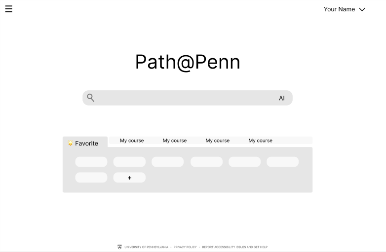
方向2—极简模式：突出搜索+个性化，弱化其他
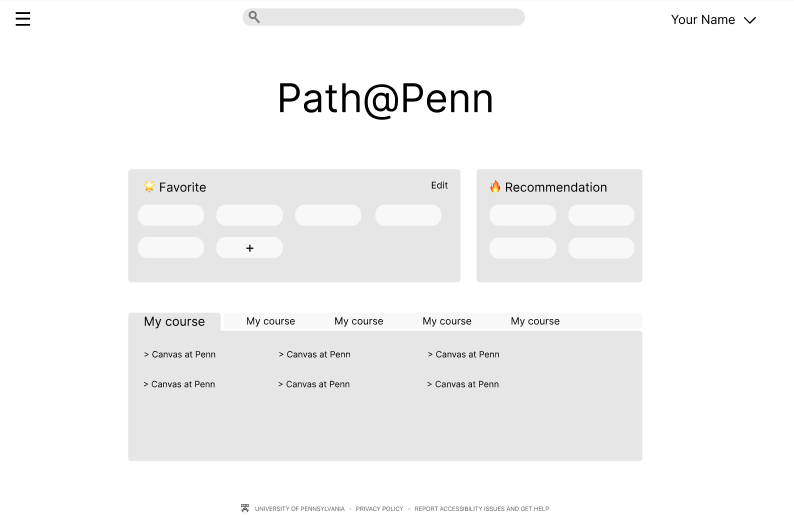
方向3—旧版微调：搜索框上移，突出应用入口
项目概要：宾大的导航页和选课系统是学生最常使用的功能，但长期以来饱受诟病。常见的用户反馈包括“找不到功能入口”“不清楚选课流程”“不知道是否成功选上课程”等。在一项调查中，超过 60% 的学生对导航页的使用体验表示不满，而对选课流程不满意的比例更高达 85%。
基于用户调研，项目组发现信息展示混乱、选课操作逻辑不清晰等关键痛点，对导航页的页面架构和选课系统的交互逻辑进行了重构，并通过多轮用户测试迭代和优化。
与旧版相比，用户对新版导航页满意度大幅提高，而新版选课操作的成功率提升了 66%，改版设计显著改善了使用体验。
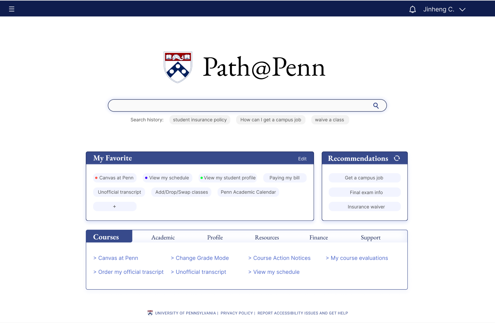
导航页是门户网站,罗列了学校各种服务的入口, 包括选课系统、修改个人档案、申请经济资助、查找学习资源等。
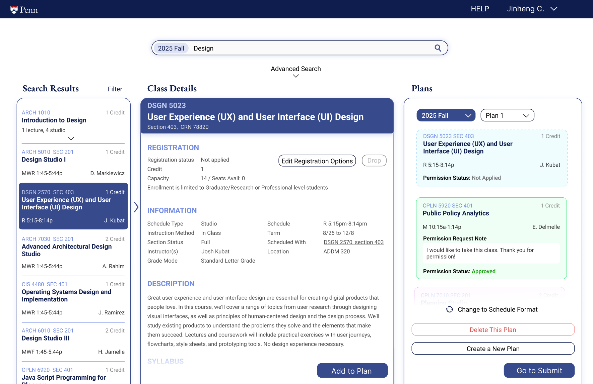
选课系统是学生完成课程搜索、方案规划、正式注册、退课与重选的平台。
项目按照“用户研究-原型设计-用户测试”的流程进行问题定义，解决方案设计和迭代，并输出最终的实施方案。
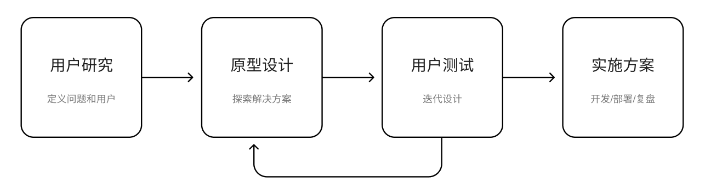
图1 项目流程
本文档将按照以上4阶段的流程，分别讲述导航页和选课系统的设计过程。
导航页的主要服务对象是在读学生。为此，我们对 30 余位学生开展了用户调研，并保证了样本的多样性——覆盖高年级学生与新生、本土学生与国际学生等不同群体。样本的多样性与相对均衡分布有助于降低调研结论的偏差，从而支持设计一个对广泛用户群体友好的产品。
调研方法结合主客观两种路径，主要包括用户访谈与用户测试两个部分。
用户访谈采用非结构化提纲，重点收集用户对现有功能与体验的评价；用户测试则通过观察用户实际使用产品的过程，并结合“为什么”的追问，深入理解用户的使用习惯、操作卡点以及用户自身未必能明确表达的问题。
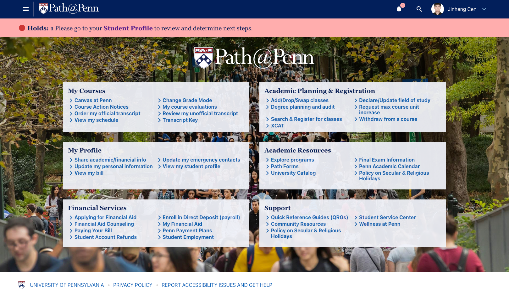
图2 旧版导航页界面
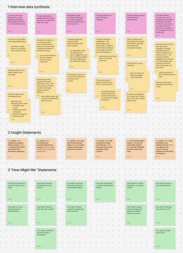
图3 我所负责部分的调研结果整理
我们的调研得出了以下发现：
根据用户调研的结论，我们确定了改进的方向：
我们采用“自下而上”的设计过程：先头脑风暴提出大量idea，再淘汰和整合，形成一个功能原型，输出4-5个功能后，再将它们整合起来，考虑界面架构和操作逻辑，形成几套解决方案，每套解决方案对应不同的侧重点，再基于用户反馈决定迭代方向。
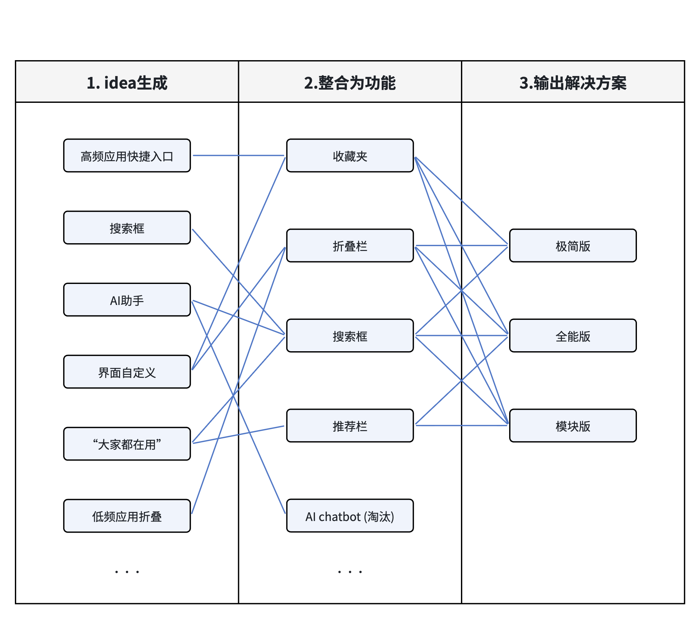
图4 方案设计过程
高频应用进入：收藏夹
90%用户把导航页作为3-5个高频功能的入口，但高频功能视用户的需求而异。通过收藏夹，允许用户自定义自己的功能入口界面，形成自己熟悉的操作路径，提升用户从导航页进入高频应用的流畅度。
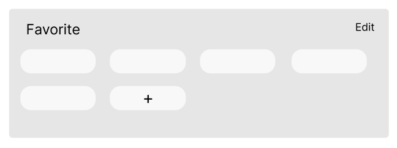
图5 收藏夹设计
应用布局：分类折叠
通过归类折叠的方式整理，默认展开最高频的“我的课程”类别，避免旧版全部展开的视觉干扰。
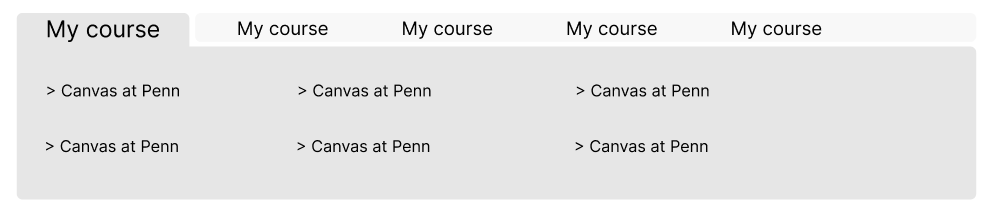
图6 分类折叠设计
强化搜索功能：增加搜索框
搜索是用户高效查找应用入口的方式。旧版的搜索按钮不明显，很多用户并不知道导航页有搜索功能。新版设计强化搜索框，突出导航搜索功能。搜索框下列出历史记录，用户可快速进入自己的历史搜索入口。
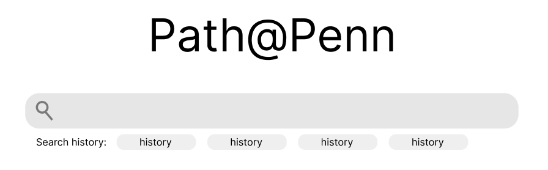
图7 搜索设计
新增推荐功能
在调研中，我们发现很多学校的优质服务和资源难以触及学生。如在入学季，学生可以通过workday平台申请学校工作减轻经济压力；在求职季，学生可以在就业指导平台预约简历修改，面试模拟等服务。这些服务现有的推广方式是通过邮件和入学的介绍科普，痛点是学生未必能记下所有的服务，并在需要的时候想起来。另一方面通过邮件搜索非常麻烦且找不到。通过推荐栏的方式，如在入学季推荐校内工作平台，在求职季推荐就业指导平台，可以提高这些学生服务的触及，提高就读体验。用户通过“浏览推荐+收藏”的操作，可以个性化归纳对自己有用的服务。
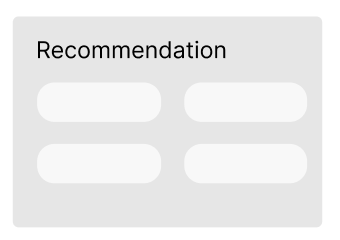
图8 推荐功能设计
在完成功能的设计后，我们将功能整合，形成解决方案。根据侧重点的不同，我们提出了三个方向的解决方案用于用户测试：


方向1集合所有功能，并通过页面布局设计区分，最大程度满足用户需求和业务目标。
方向2以简洁和简化为导向，重点突出搜索和个性化收藏的核心功能。
方向3延续旧版设计，弱化搜索，强调门户分流的入口模式。
用户和学校均选择方向1作为最喜爱的方向
当然，也有用户提出了反面的建议：
一位用户称尽管新的界面看上去更加清晰了，但他已经习惯了现在这个页面，更新页面也未必提高效率。另一位用户则质疑个性化定制的必要性：“或许没有人会花时间去定制这个界面“
设计团队的解释：高年级学生往往已经对原有系统形成固定使用路径，并发展出自己的“捷径”。但学校学生群体流动性高（本科4年，硕士1-2年），改版有长期效益。同时，新生对导航页表现出强大的好奇心与探索行为，新用户对花时间进行定制并不抵触，个性化配置还能在早期阶段逐步建立使用习惯。同时，大多数中高年级同学也表示愿意尝试个性化功能。
结合用户测试结果，我们最终选择了方向1作为深化方向，并坚持了大多数用户认可的搜索+个性化+推荐的核心功能。
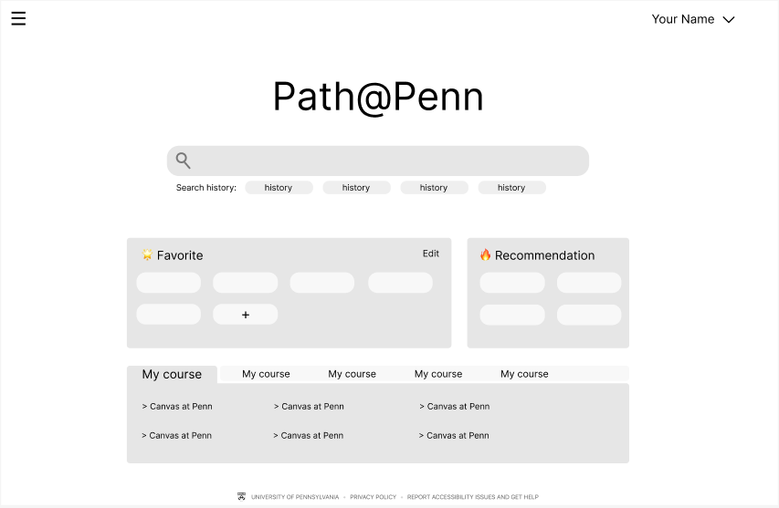
图9 被选中的方向1的低保真原型
图10 实施方案
相比低保真原型，实施方案主要做出了以下修改：
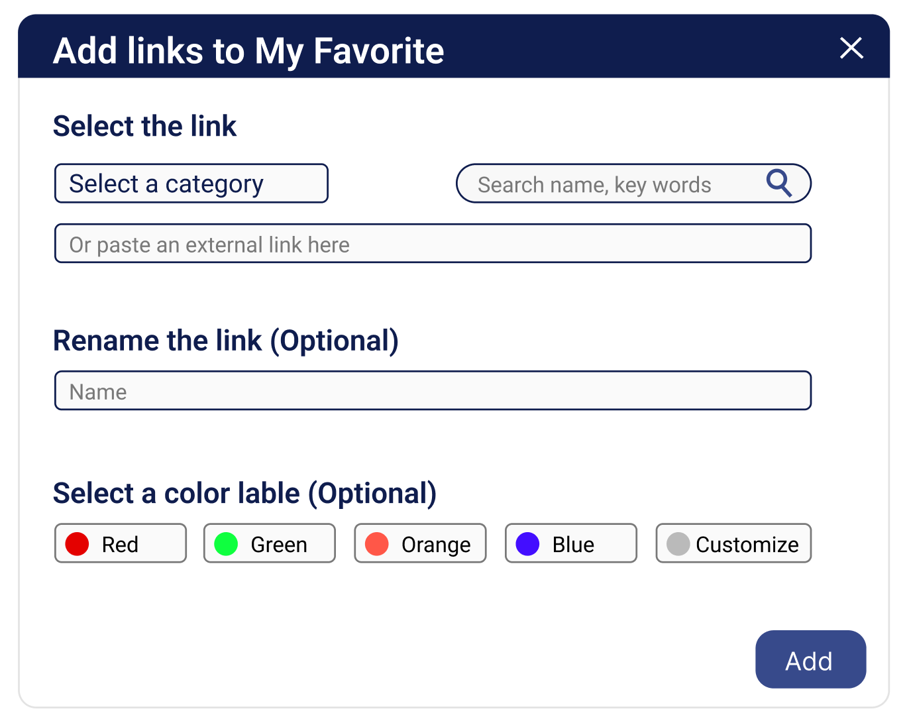
图11 增加链接到收藏栏功能
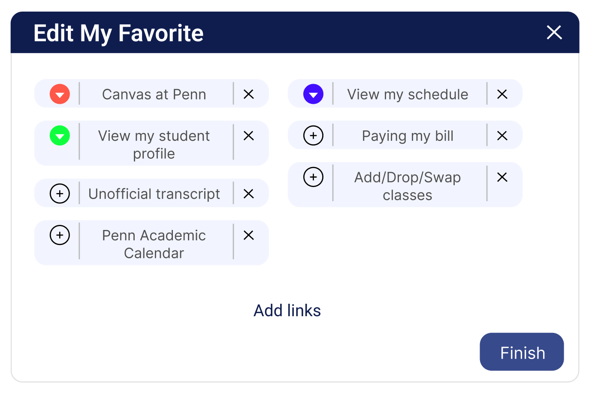
图12 编辑收藏夹功能“新增/删除/改名/改颜色标签”
旧版
新版
效果评估包括可用性测试，用户满意度评分。新版界面用户满意度大幅提升，主要来自“界面更加清晰了”，“操作更加便捷”，“收藏夹和历史记录很好用”，“搜索符有帮助”。可用性测试表明：收藏夹编辑功能仍有提升空间，如何提高其易用性将是迭代优化的主要方向。
内容制作中～
Project Overview: The Penn student landing page and course registration system are among the most frequently used digital services on campus. Common feedback includes issues such as “difficulty locating entry points,” “unclear course registration procedures,” and “uncertainty about whether enrollment was successful.” In a survey, more than 60% of students reported dissatisfaction with the navigation page experience, while dissatisfaction with the course registration process was even higher, reaching 85%.
Based on user research, the project team identified key pain points such as disorganized information presentation and unclear operational logic in the course registration process. In response, the team redesigned the navigation page’s information architecture and restructured the interaction logic of the course registration system, followed by multiple rounds of user testing and iterative optimization.
Compared with the previous version, user satisfaction with the new navigation page increased significantly, and the success rate of course registration tasks improved by 66%, demonstrating that the redesign substantially enhanced the overall user experience.
Serves as the university’s portal website, listing entry points to various campus services. These include the course registration system, updating personal profiles, applying for financial aid, and accessing academic resources.
The course registration system is the platform where students search for courses, plan their schedules, complete official enrollment, and manage add/drop or course changes.
The project followed a workflow of "user research - prototype design - user testing" to define problems, design solutions, and iteratively refine them, ultimately producing a final implementation plan.
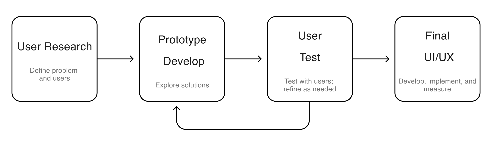
Pic 1. Project Workflow
This document will describe the design process for the landing page and the course registration system separately, following the four-phase workflow outlined above.
The primary users of the navigation page are currently enrolled students. To better understand their needs, we conducted user research with more than 30 students and ensured sample diversity, including upperclassmen and freshmen, as well as domestic and international students. This diversity and relatively balanced distribution helped reduce potential bias in the findings and supported the design of a product that serves a broad user population.
The research combined both subjective and objective approaches, mainly consisting of user interviews and user testing.
User interviews were conducted using a semi-structured guide to collect participants’ evaluations of the existing features and user experience. User testing, on the other hand, involved observing how participants actually interacted with the product and asking follow-up “why” questions to better understand their usage patterns, operational difficulties, and underlying issues that users themselves might not be able to clearly articulate.
Pic 2. Landing Page UI (Existing version)
Pic 3.Compilation of Research Findings for the Section I Was Responsible For
Our research identified the following key findings:
The navigation page does not effectively function as a “navigation” tool and primarily serves as an entry point for high-frequency applications.
Over 90% of users only know and use 3–5 entries on the navigation page. Most students treat the page as a shortcut to a few frequently used services and automatically ignore the rest.
More than 99% of users prefer using search engines rather than the navigation page when trying to find the entry point to a university service.
High-frequency services are difficult to locate quickly. The navigation page presents around 50 entries on a single screen, with dense text and little visual differentiation.
The interface creates a heavy cognitive load and lacks clear hierarchy. Over 80% of users expressed dissatisfaction with the page design, mainly due to excessive information, unclear distinction between primary and secondary elements, ambiguous categorization, and a visually cluttered background.
Based on the findings from the user research, we identified the following improvement directions:
How might we help users access high-frequency applications more efficiently?
Over 90% of usage scenarios involve entering frequently used services through the navigation page.
How might we present information hierarchy more clearly?
More than 80% of users believe the navigation page has a confusing information structure.
How might we help users quickly find the services they need?
99% of users are unaware that they can access a wide range of university services through the navigation page.
High-frequency applications: Add to Favorites
90% of users treat the navigation page primarily as an entry point to 3–5 frequently used functions, but which functions are considered “high-frequency” varies by individual needs. By introducing a favorites feature, users can customize their own set of function shortcuts and build a personalized interface, creating familiar usage paths and improving the efficiency of accessing frequently used services from the navigation page.
Pic 4. Favorite Design
Application Layout: Collapsible Categories
Applications are organized using collapsible categories. By default, the high-frequency “My Courses” category is expanded, reducing the visual clutter caused by the fully expanded layout in the previous version.
Pic 5. Collapsible Category Design
Enhanced Search Functionality: Addition of a Search Bar
Search is an efficient way for users to locate application entry points. In the previous version, the search button was not prominent, and many users were unaware that the navigation page supported search. The redesigned version emphasizes the search bar to highlight the navigation search function. Search history is also displayed below the search bar, allowing users to quickly access previously searched services.
Pic 6. Search Bar Design
Added Recommendation
Our research found that many valuable university services and resources are difficult for students to discover. For example, during the beginning of the academic year, students can apply for on-campus jobs through the Workday platform to help ease financial pressure; during the job search season, students can book services such as resume reviews and mock interviews through the career services platform. Currently, these services are mainly promoted through emails or orientation sessions. However, students may not remember all available services or recall them when needed. Searching through old emails is also inconvenient and often ineffective.
To address this issue, the redesigned navigation page introduces a recommendation section. For instance, the on-campus job platform can be recommended during the start of the semester, while the career services platform can be highlighted during recruiting season. This approach increases the visibility and accessibility of student services, improving the overall student experience. Through the interaction of “browsing recommendations + adding to favorites,” users can also gradually curate and personalize the services most relevant to them.
Pic 7. Recommendation Bar Design
After completing the feature design, we integrated the functionalities into comprehensive solutions. Based on different design priorities, we proposed three alternative interface directions for user testing.
Direction 1: Integrates all features and differentiates them through page layout design, aiming to maximize both user needs and institutional objectives.
Direction 2: Emphasizes simplicity and minimalism, highlighting search and personalized favorites as the core functions.
Direction 3: Builds upon the previous design, downplaying search and maintaining a portal-style entry model that directs users to different services.
Both users and the university selected Direction 1 as the preferred option.
Users view the navigation page primarily as a tool-oriented platform and expect it to provide more functionalities that help them accomplish their tasks efficiently. They also believe that the search and recommendation features better align with their expectations for the navigation page, making it easier to discover and access application entry points.
At the same time, the search and recommendation functions support the university’s goal of promoting student services and increasing their visibility.
Of course, some users also raised counterpoints.
One user noted that although the new interface appears clearer, they are already accustomed to the current page and questioned whether a redesign would actually improve efficiency. Another user questioned the necessity of personalization, suggesting that “perhaps no one would spend time customizing this interface.”
Upper-year students often develop fixed usage patterns and personal “shortcuts” within the existing system. As a result, they may feel less need for interface changes. However, the university has a highly dynamic student population (typically four years for undergraduates and one to two years for master’s students), meaning that system improvements can generate long-term benefits for incoming cohorts.
At the same time, new students tend to show strong curiosity and exploratory behavior toward the navigation page. New users are generally not resistant to spending time customizing their interface, and personalized configuration can help establish effective usage habits early on. In addition, most mid- and upper-year students also indicated that they would be willing to try the personalization features.
Based on the user testing results, we ultimately selected Direction 1 for further development and retained the core features widely supported by users: search, personalization, and recommendations.
Pic 9. Low-Fidelity Prototype of the Selected Direction 1
Pic 10. Final Version
Compared with the low-fidelity prototype, the implementation plan includes the following key modifications:
Visual consistency with the university website: The design adopts the same color and typography scheme as the official university website, including the use of a dark header bar to create a more balanced visual experience.
Enhanced recommendation feature: A refresh button is added to the recommendation section, allowing users to load and explore additional recommended services.
Expanded customization for the favorites panel: The implementation further develops the user-customizable favorites section. Users can rename items, add color tags for categorization, and include external links. The personalized navigation panel thus becomes a centralized gateway for users to access university-related services.
Pic 11. Add links to My Favorite
Pic 12. Edit My Favorite
Old version
Redesign version
The evaluation included usability testing and user satisfaction surveys. Overall, user satisfaction with the new interface increased significantly. Positive feedback mainly highlighted that “the interface is clearer,” “operations are more convenient,” “favorites and search history are very useful,” and “the search function is helpful.”
Usability testing also revealed areas for improvement. In particular, the favorites editing feature still has room for enhancement. Improving its usability will be a key focus in future iterations and optimization efforts.